中文全文译文：由「译文工坊」根据英文原文自动翻译生成，供学习参考。结构与措辞以译文为准；想看原始论述，请点上方「阅读原文」。
我们尝试让 AI 设计出不像“流水线货色”的网站，由此学到了什么
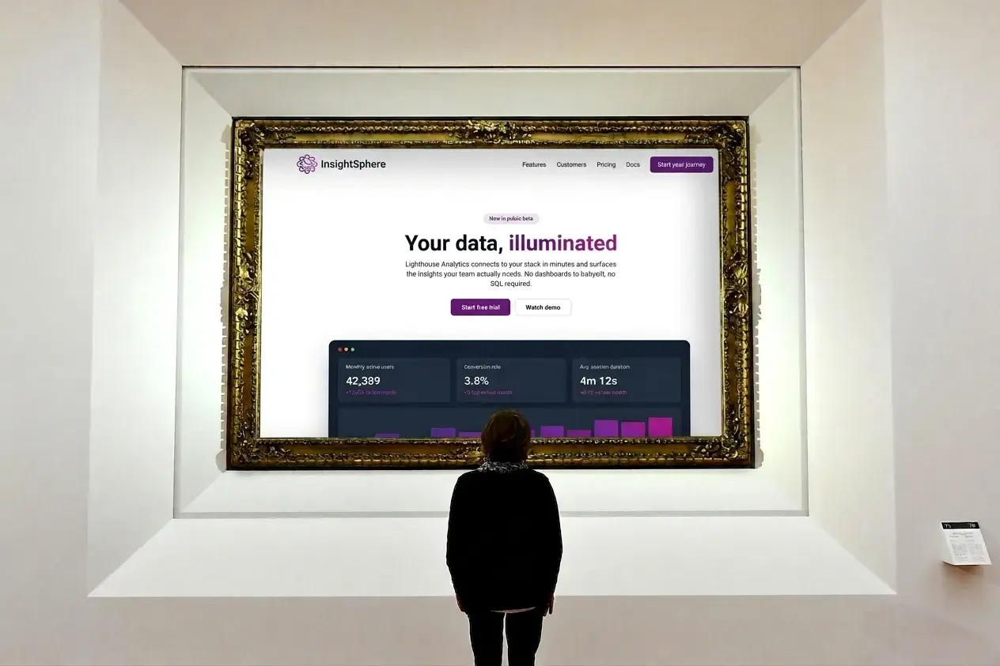
Ben Shumaker · 2026 年 4 月 9 日
我在 Repaint 的工作之一，是让 AI 生成真正好看的网站。这出人意料地难。AI 模型总是一再落入同样的视觉套路，而且一致性之高，让“AI 网站”正在成为一种一眼可辨的审美。
我们测试了几十种打破这种模式的方法。在这个过程中，我们对模型有了更深入的理解，想在此与大家分享。
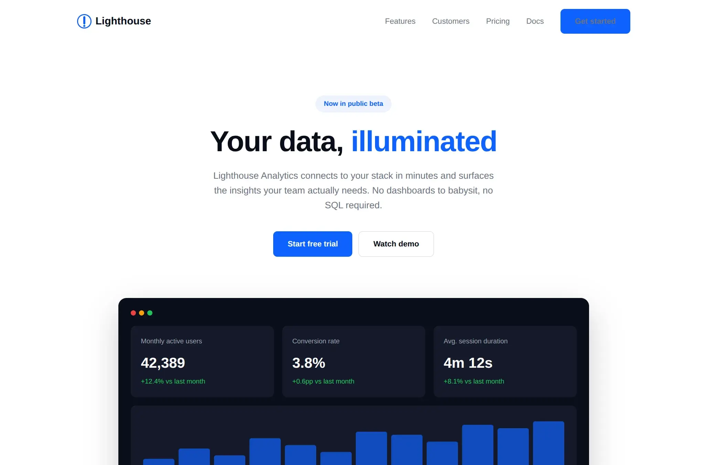
这是一个相当典型的开箱即用 AI 网站：风格千篇一律，内容寥寥无几，布局被用滥。当然，偶尔还会冒出一个看不清字的按钮。
我只给了它极少的指引。这看起来可能不公平，但我认为这是个很好的测试。显然，如果你不断追加提示词，是可以一步步把它改成一个很棒的网站的。可那样一来，设计全是你在做，模型只是在写代码。而大多数人并不懂怎么做设计。真正的突破在于 AI 能够在无需人类指定每个细节的情况下完成设计。
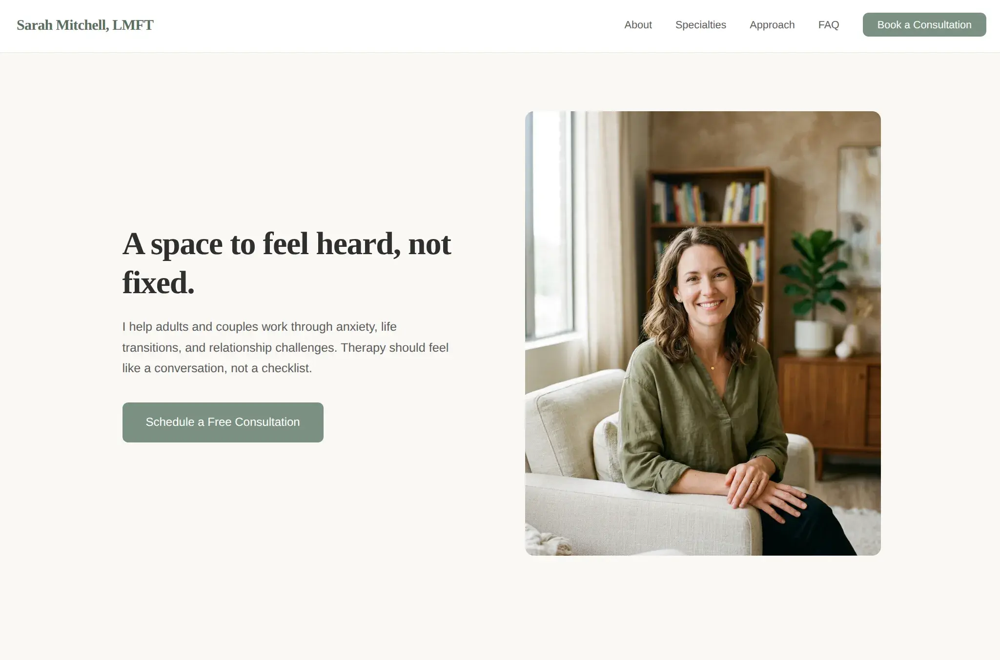
AI 的默认风格基本上是个普遍问题。这是它做出的心理咨询师网站。你可能以为心理咨询师网站会有截然不同的样子，但并没有，它只是做出了大致相同的网站，再配上绿色按钮。
如何改进 AI 生成的网站？
设计系统
一个显而易见的做法是：预先构建好颜色、字体、圆角和阴影。只看代码的时候，这些决策很难做对。让 AI 从一套优秀的方案起步，出错的空间就会小得多。
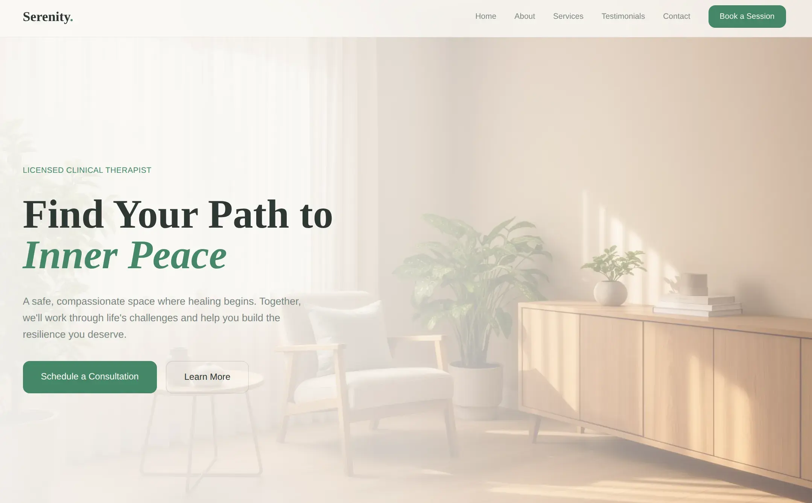
有一点帮助。明显的配色错误少了，这里还用了图片背景。但整体的布局、内容密度和结构基本没变。设计系统给了模型一套调色板，却没有教会它如何做构图。
指导
另一种做法：给模型一大套设计指令，用提示词让它做它通常不会做的事。Claude AI 的主聊天机器人就有一个专门这样做的 skill：
This skill guides creation of distinctive, production-grade frontend interfaces that avoid generic "AI slop" aesthetics. Implement real working code with exceptional attention to aesthetic details and creative choices.
The user provides frontend requirements: a component, page, application, or interface to build. They may include context about the purpose, audience, or technical constraints.
Design Thinking
Before coding, understand the context and commit to a BOLD aesthetic direction:
Purpose: What problem does this interface solve? Who uses it?
Tone: Pick an extreme: brutally minimal, maximalist chaos, retro-futuristic, organic/natural, luxury/refined, playful/toy-like, editorial/magazine, brutalist/raw, art deco/geometric, soft/pastel, industrial/utilitarian, etc. There are so many flavors to choose from. Use these for inspiration but design one that is true to the aesthetic direction.
Constraints: Technical requirements (framework, performance, accessibility).
Differentiation: What makes this UNFORGETTABLE? What's the one thing someone will remember?
CRITICAL: Choose a clear conceptual direction and execute it with precision. Bold maximalism and refined minimalism both work - the key is intentionality, not intensity.
Then implement working code (HTML/CSS/JS, React, Vue, etc.) that is:
Production-grade and functional
Visually striking and memorable
Cohesive with a clear aesthetic point-of-view
Meticulously refined in every detail
Frontend Aesthetics Guidelines
Focus on:
Typography: Choose fonts that are beautiful, unique, and interesting. Avoid generic fonts like Arial and Inter; opt instead for distinctive choices that elevate the frontend's aesthetics; unexpected, characterful font choices. Pair a distinctive display font with a refined body font.
Color & Theme: Commit to a cohesive aesthetic. Use CSS variables for consistency. Dominant colors with sharp accents outperform timid, evenly-distributed palettes.
Motion: Use animations for effects and micro-interactions. Prioritize CSS-only solutions for HTML. Use Motion library for React when available. Focus on high-impact moments: one well-orchestrated page load with staggered reveals (animation-delay) creates more delight than scattered micro-interactions. Use scroll-triggering and hover states that surprise.
Spatial Composition: Unexpected layouts. Asymmetry. Overlap. Diagonal flow. Grid-breaking elements. Generous negative space OR controlled density.
Backgrounds & Visual Details: Create atmosphere and depth rather than defaulting to solid colors. Add contextual effects and textures that match the overall aesthetic. Apply creative forms like gradient meshes, noise textures, geometric patterns, layered transparencies, dramatic shadows, decorative borders, custom cursors, and grain overlays.
NEVER use generic AI-generated aesthetics like overused font families (Inter, Roboto, Arial, system fonts), cliched color schemes (particularly purple gradients on white backgrounds), predictable layouts and component patterns, and cookie-cutter design that lacks context-specific character.
Interpret creatively and make unexpected choices that feel genuinely designed for the context. No design should be the same. Vary between light and dark themes, different fonts, different aesthetics. NEVER converge on common choices (Space Grotesk, for example) across generations.
IMPORTANT: Match implementation complexity to the aesthetic vision. Maximalist designs need elaborate code with extensive animations and effects. Minimalist or refined designs need restraint, precision, and careful attention to spacing, typography, and subtle details. Elegance comes from executing the vision well.
Remember: Claude is capable of extraordinary creative work. Don't hold back, show what can truly be created when thinking outside the box and committing fully to a distinctive vision.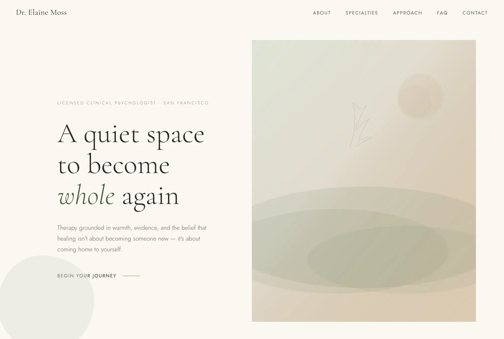
这是实实在在的进步。整体布局和之前相似，但它终于像一个真正的心理咨询师网站了：字体更柔和，按钮样式也很独特。换上你自己的图片，完全可以直接发布。
在我们的测试中发现，自定义指令解决不了重复问题。模型仍然会套用同样的模式，所以看起来依旧基本是标准的 AI 网站，只是更精致了一些。
而且，要避开被滥用的模式，比 Claude 的提示词所暗示的更难。它们写道：
NEVER use generic AI-generated aesthetics like overused font families (Inter, Roboto, Arial, system fonts)
结果，模型转而滥用其他字体，比如 Jost 和 Cormorant Garamond。而且在 Inter 才是正确选择的场景里，它也束手无策了。所以说，你可以强行去掉它的坏习惯，但无论如何，它还是会一再重复同样的做法。
参考图
如果完全不用文字，直接把想要的效果展示给模型呢？给它一张你喜欢的设计截图，让它做出类似的东西。
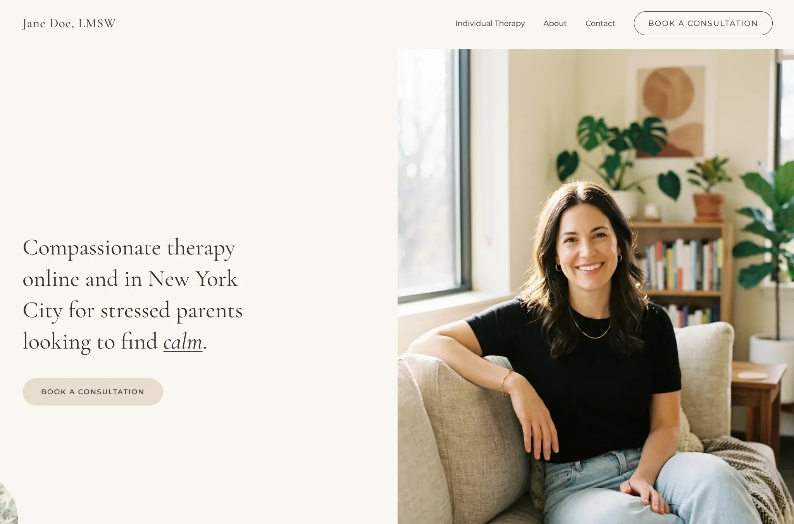
这是第一个能让模型跳出它惯用的那 2-3 种布局、做出新布局的方法。它自己从来不会生成半屏图片的布局。
图片是传递大量信息的超高效方式。模型能一次性捕捉布局、间距、色彩关系和信息密度：这些你根本想不到要在提示词里描述的东西。但它也很脆弱：无法复现复杂的布局或动画。而且一旦模型需要补充参考图之外的更多内容，就会退回默认风格。
代码与样式模板
这大概是最简单粗暴的办法：直接给它代码。ChatGPT 现在就是这么做的，它在生成网站时会使用模板库。
这样做，质量显然会大幅提升，因为你等于直接把答案交给了 AI。但大多数人手上并没有现成的代码。所以这主要是平台开发者的方法，用来为其他人打造工具。
不过有一个问题：
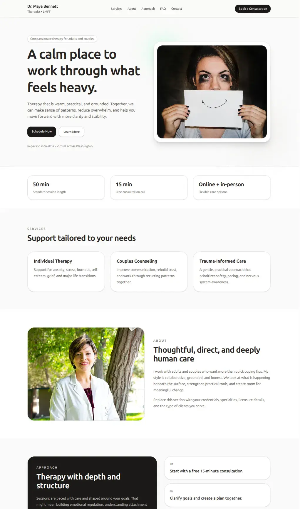
"做一个心理咨询师网站"
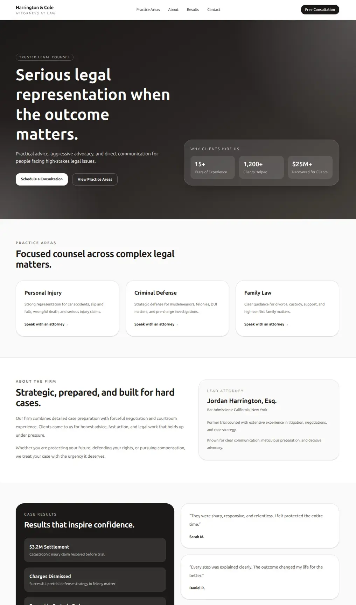
"做一个律师网站"
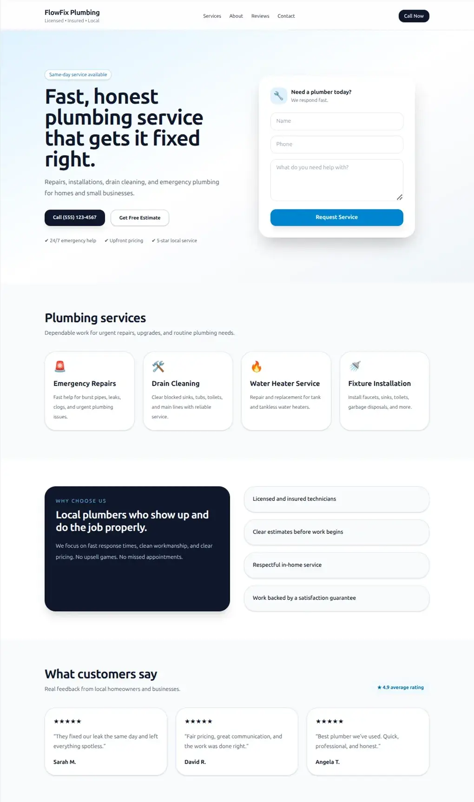
"做一个水管工网站"
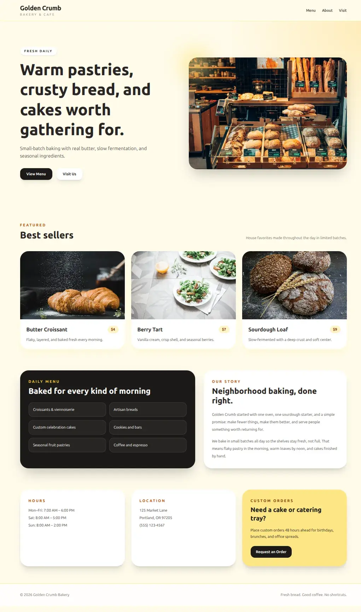
"做一个面包店网站"
如果你给 AI 提供示例，它生成的网站会惊人地相似，只做匹配上下文所需的最小调整。所以现在 ChatGPT 生成网站时，无论提示词是什么，看起来都像同一家科技创业公司。
遗憾的是，即便用上所有这些方法，我也不确定我们做出的东西是否比一个通用的 Wix 模板更好。
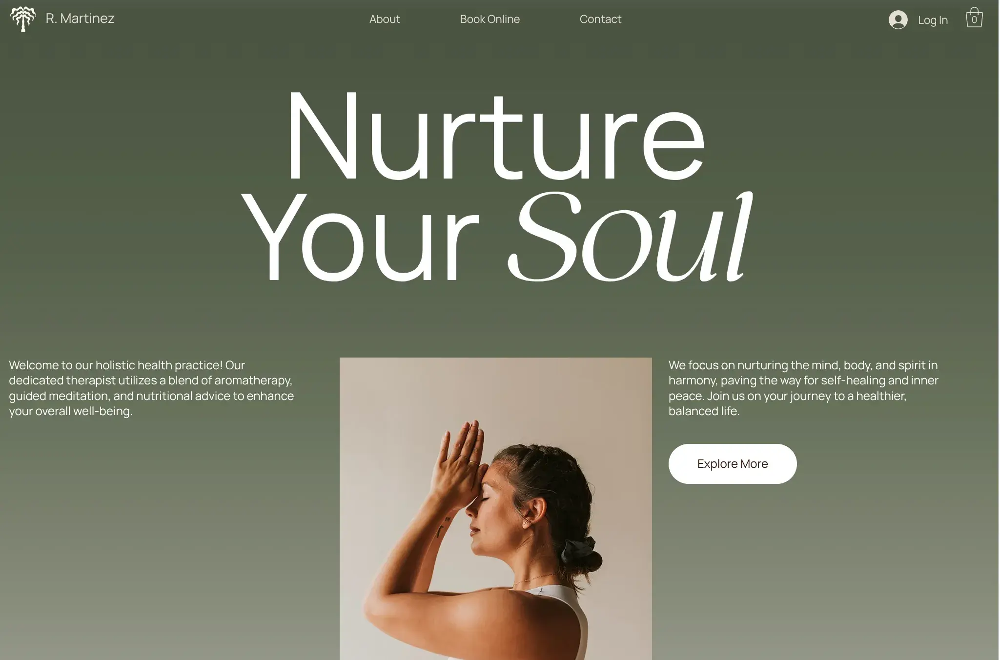
自我迭代
为什么不让模型看看自己的输出并加以改进呢？毕竟 Wix 的设计师也是经过大量迭代才完成设计的。
理论上，这能解决所有问题。实际上，它要跑 20 分钟，花掉 10 美元的 Token，而且很快就停滞不前。例如，我让它对前面的灯塔网站进行迭代，它甚至没有注意到那个根本看不清的按钮。
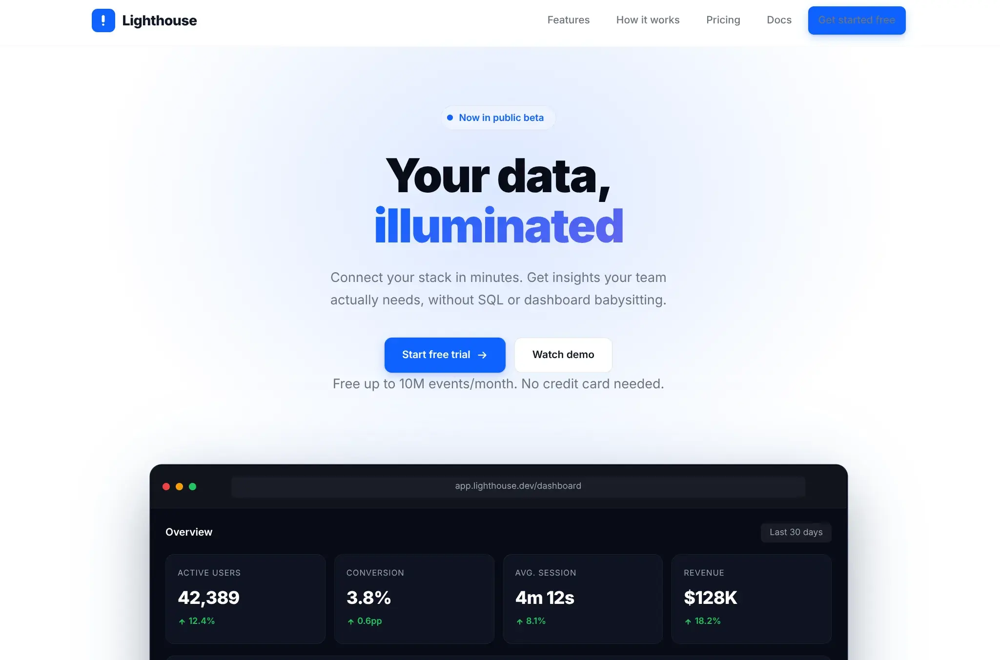
自我迭代很可能是未来的方向，但今天的模型还没准备好。
探索完所有这些方法后，我们得到了几个切实可行的风格改进方案。不仅如此，我们对 AI 模型的工作方式也有了深入得多的理解。
我们对 AI 模型的认识
模型非常偏爱默认风格
模型里内置了一种默认审美，就像训练数据中的“平均网站”。每次做决策时，除非有明确的理由，否则它都会采用默认风格。这就是 AI 生成的网站如此容易辨认的原因，也是自我迭代其实没有任何成效的原因：模型不会朝着独特的设计收敛，而是收敛到默认风格。如果想让 AI 打破这种模式，就得给它一些能让它跳出默认的东西，比如图片参考或代码示例。
图片的带宽比文字更高
用文字很难引导模型。你可以写一整段话，要求“简洁、现代、留白充足”，但这几乎没有意义，最后得到的永远是默认风格。图片能让模型做出独特的设计，因为它承载了更多信息。一张截图包含了数百个关于间距、颜色和布局的微小决策，这些是文字无法定义的。所以，除非你有代码示例，否则参考图片就是引导 AI 的最佳方式。
预先构建是一条权衡曲线
我们尝试的每一种策略，本质上都是替 AI 预先做出决策。给它的越多，质量上限就越高，但灵活性也越低。不过，只有像 Repaint 这样的通用平台，才需要为每一种潜在用例做好准备。如果只是为了自己用，你可以（也应该）给 AI 提供具体的参考，把视觉质量拉到最高。
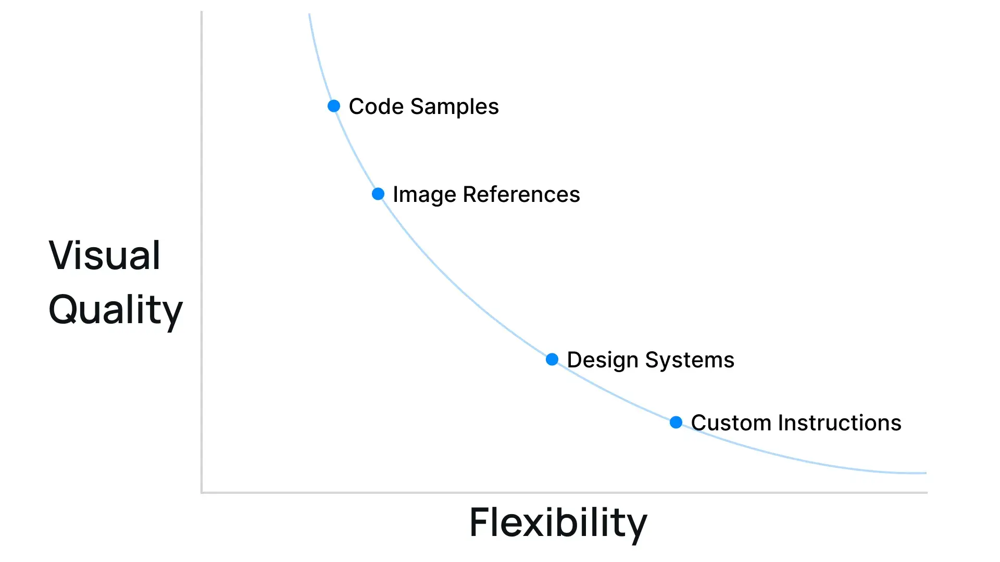
如何借助 AI 做出更好的设计
避免 slop（低质量 AI 产出）最简单的办法，是给 AI 提供独特的视觉参考，比如你喜欢的网站截图、代码示例，或者两者兼备。风格确立之后，AI 就能生成更多风格一致的区块。这比反复调整提示词有效得多，而大多数人用的恰恰是后一种做法。
如果你觉得寻找参考、建立风格有些望而生畏，可以试试 Repaint。我们构建了一个庞大的风格库，包含代码示例和设计变量。因为选择丰富，AI 不会被限制在单一风格里。
更广泛地说，无论是哪种视觉类 AI 工具，不管是应用设计、图像生成还是视频生成，与其说“让它看起来更高级”，不如给它更多截图和示例。效果会好得多。